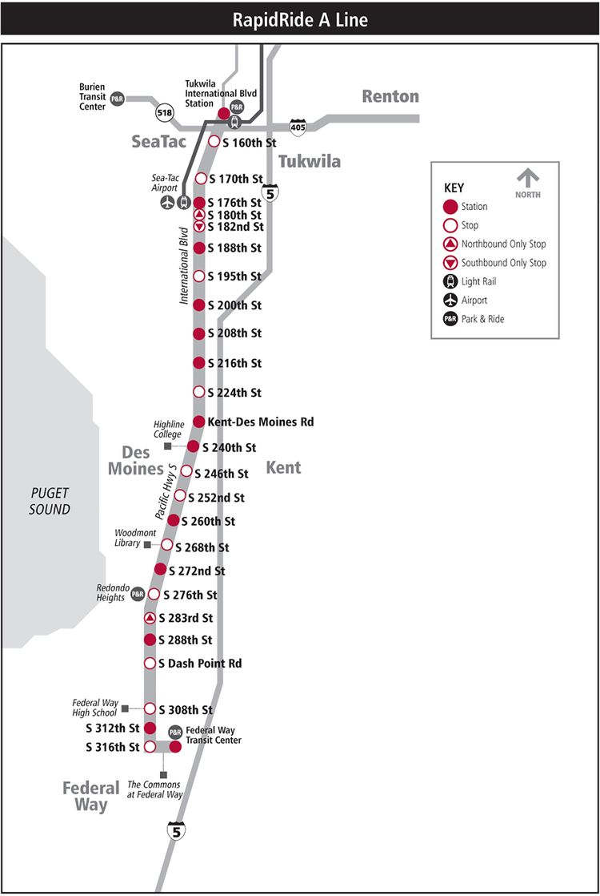
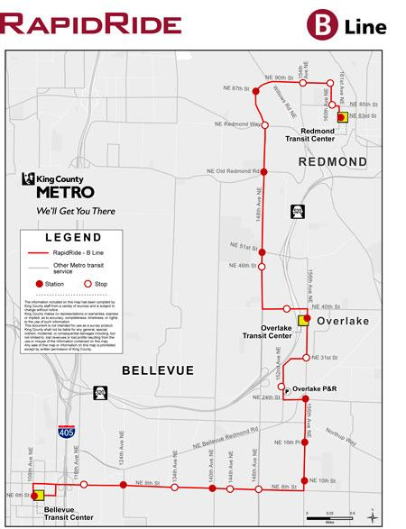
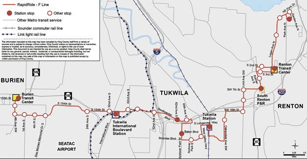

Existing RapidRide Service
As of 2024, King County Metro operates seven RapidRide lines throughout the Seattle metropolitan area. These lines serve key corridors with high ridership demand, providing frequent and reliable service with various BRT features. The existing RapidRide lines are:
Line A - Tukwila to Federal Way
Launching in October 2010 as the first line in the RapidRide network, the A Line runs from the Tukwila International Boulevard light-rail station to the Federal Way Transit Center. Replacing the route 174, it leveraged pre-existing High Occupancy Vehicle (HOV) lanes on Pacific Highway South and International Boulevard to cut trip times.
Line B - Redmond to Overlake
Launching in October 2011, the B Line runs from downtown Redmond to downtown Bellevue, with stops in Overlake and Crossroads. The fast connection between the Eastside's population centers enabled a major bus restructure, creating 3 new routes, rerouting 11 routes, and deleting 13 routes that were made redundant-nearly all of the restructured routes act as "feeders" to the central RapidRide line.
Line C - West Seattle to South Lake Union
Launching in September 2012, the C Line runs from West Seattle to South Lake Union via the South Seattle Bridge. The line replaced the route 21, which was the highest-ridership bus route in King County prior to the RapidRide conversion. The C Line features transit signal priority and dedicated bus lanes on parts of its route to improve travel times.

Line D - Ballard to Downtown Seattle
Launching in September 2012 alongside the C Line, the D Line runs from Ballard to Downtown Seattle via Aurora Avenue North. The line replaced the route 15, which was another high-ridership route in King County. The D Line also features transit signal priority and dedicated bus lanes on parts of its route.

Line E - Shoreline to Downtown Seattle
Launched in February 2014 and running from Shoreline to Downtown Seattle with stops in West Green Lake, the E Line replaced the Route 358 Express and remains King County Metro's consistently busiest route. This line came with significant infrastructure upgrades to the infamously dangerous Aurora Avenue, including: new sidewalks and extensive sidewalk repairs, improved pedestrian crossings, enhanced crossing signals, improved lighting, and new bus lanes that reserved outside lanes for buses and right-turning vehicles.

Line F - Burien Transit Center to Downtown Renton
Launched in June 2014 to replace routes 140 and 110, the F line runs from Burien to Renton with stops in SeaTac and Tukwila. This is a vital line for connection along Seattle's southside and suburbs, connecting the Burien Transit Center, the Tukwila light rail station, the Renton Transit Center, and the Boeing Renton facility.
Line H - Downtown Seattle to Burien Transit Center
Initially planned to launch before the G Line until the former encountered construction delays, the H Line launched in March 2023 and replaced Route 120 to connect Burien Transit Center with Downtown Seattle, with connections through Delridge.

Line G - Madison Valley to Downtown Seattle
Seattle's newest-launched Rapid Ride Line, the Rapid Ride G Line launched in September 2024 and runs along Madison street between Downtown Seattle and Madison Valley. Alongside significant safety and accessibility upgrades to all of Madison Blvd, the G line is also Seattle's first BRT line to utilize center island boarding-a significant upgrade, as it removed all need to pull in and out of traffic after stops.